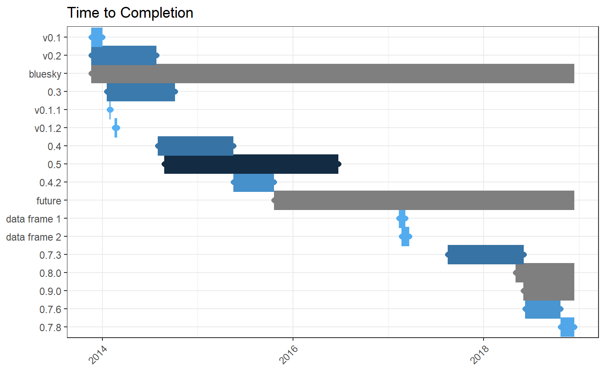
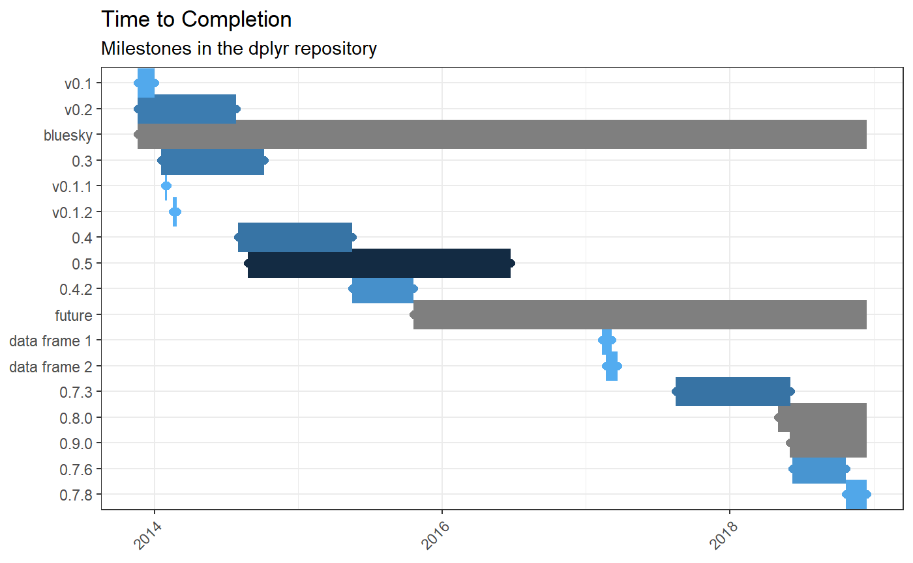
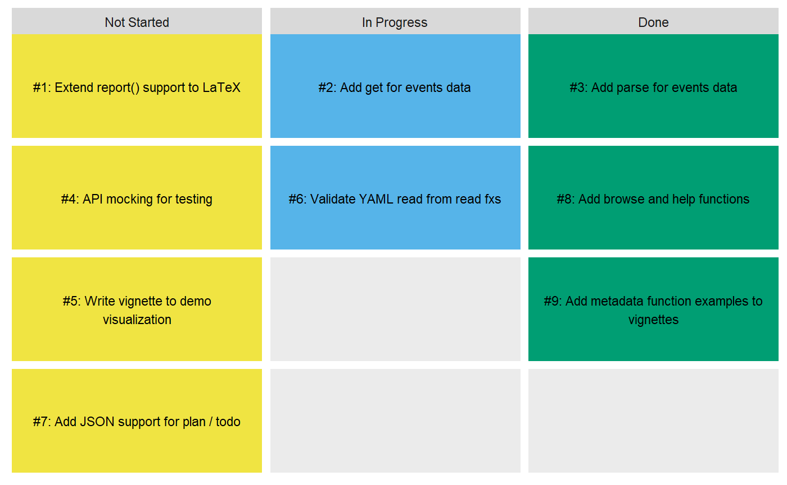
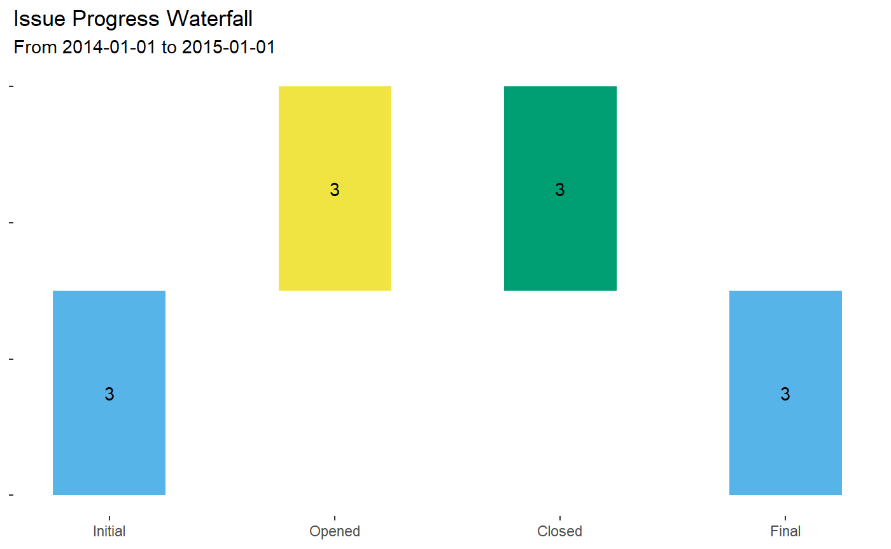

Visualizations (Experimental)
Emily Riederer
2019-01-10
Source:vignettes/visualization.Rmd
visualization.Rmdprojmgr has many different ways to visualize project status. Note that all visualization functions are currently experimental and still have some known challenges. All feedback is welcome on these visualizations or other desired visualizations.
Gantt Charts
For reporting on time-to-completion, viz_gantt() creates one horizontal bar per item (e.g. issue, milestone) and colors issues by length of time open. Items are ordered by start date, which defaults to the data’s created_at data but can be altered via the function’s parameters. (This is demonstrated in the Events Data vignette.)
Items which are not yet completed are colored in grey since the true time-to-completion value is censored. Additionally, they do not have the terminal half-dot at the end of the bar.
As an example, let’s plot all of the milestones in dplyr’s GitHub repository, as pulled on January 1, 2019.
viz_gantt(dplyr_milestones)
#> Warning: Removed 4 rows containing missing values (geom_point).
Note that this plot shows some of the risks of black-box functions. At the time of writing, the “bluesky” milestone was open on GitHub yet has no uncompleted issues. It’s important to be precise about your definition of done, or change the start and end parameters to use variables most closely aligned to your definition.
As a ggplot, standard ggplot2 features and styling can be added to the output.
viz_gantt(dplyr_milestones) +
ggplot2::labs(subtitle = 'Milestones in the dplyr repository')
#> Warning: Removed 4 rows containing missing values (geom_point).
Either gantt charts or task boards (next section) can also be passed through viz_linked to add links to their text back to the relevant GitHub milestones. This only works in RMarkdown with the results = "asis" chunk option or saved to a file.
g <- viz_gantt(dplyr_milestones)
viz_linked(g)
#> Warning: package 'gdtools' was built under R version 3.4.4
#> Warning: Removed 4 rows containing missing values (geom_point).Task Boards
viz_taskboard() creates an Agile-like taskboard of items (e.g. issues, milestones) to be started, in progress, and completed.
For example, imagine pulling issues from a hypothetical R package into the pkg_issues dataframe.
viz_taskboard(pkg_issues,
in_progress_when = is_labeled_with("in-progress"),
str_wrap_width = 40)
Users specify what logic to use for identifying “in progress” items by passing a function factory to the in_progress_when parameter. The above example uses the is_labeled_with() option. Other options include:
ls('package:projmgr')[grep("^is_*", ls('package:projmgr'))]
#> [1] "is_assigned" "is_assigned_to" "is_created_before"
#> [4] "is_due" "is_due_before" "is_in_a_milestone"
#> [7] "is_in_milestone" "is_labeled_with" "is_part_closed"See ?taskboard_helpers for more details.
As a second example, suppose we instead classify issues as in progress once they have been put in a milestone.
viz_taskboard(pkg_issues,
in_progress_when = is_in_a_milestone(),
str_wrap_width = 40)
Or when they were assigned to “emilyriederer”.
viz_taskboard(pkg_issues,
in_progress_when = is_assigned_to("emilyriederer"),
str_wrap_width = 40)
Unfortunately, this function currently suffers from spacing problems when trying to show many items or items with very long names. Users can corrently attempt to fix this by experimenting with the str_wrap_width and text_size parameters or by adjusting the fig.width and fig.height RMarkdown options; however, in the long-term, this should be handled in a more sustainable, automated fashion.
Waterfall Charts
viz_waterfall() creates a waterfall plot showing, for a fixed time-period, the initial open count, newly opened, newly closed, and final open count of issues or milestones.
viz_waterfall(pkg_issues, start_date = '2018-11-20', end_date = '2018-12-15')